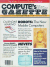
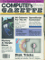
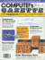
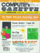
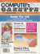
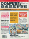

![[Contents]](../../../images/blue_toc.gif)
![[Commodore]](../../../images/blue_cbm.gif)
![[New]](../../../images/blue_new.gif)
![[Search]](../../../images/blue_search.gif)
![[Home]](../../../images/blue_home.gif)
Here is a little collection of interesting articles. It consists of
several articles scanned from old magazines, mostly from COMPUTE!'s
Gazettes. These articles deals with various subjects, while primary
target was the Commodore 128 - simply because I just got one. But there
is some other interesting machines mentioned, like the Commodore LCD.
-  Issue 10, April 1984
- Commodore's New Computer Family: News from the Winter Consumer Electronics Show
A new line of Commodore computers with built-in software
options the 264 family created the biggest stir among computer
industry retailers and distributors at the 1984 Winter Consumer
Electronics Show (CES). Commodore also displayed a growing
collection of 64 and VIC-20 software, a faster disk drive, and
a new video monitor. Here's a report on the new products and
the new choices facing owners and users of Commodore computers.
- Horizons 64
Thoughts about Commodore's CP/M implementation for Commodore 64.
-  Issue 15, September 1984
- Disk Tricks
Many operations with your 1540 or 1541 disk drive can be
tedious and difficult. This article discusses how your drive
works and then demonstrates some nifty tricks to help you get
the most out of it. Included are programs which allow you to
change a disk name, change a disk ID, unscratch, and scratch
disk files.
A side story: Hexed By Numbers
-  Issue 21, March 1985
- The Peripheral Connection: Enhancing Your 64
Peripherals can bring much more power and flexibility to your
Commodore 64. And they're available as never before. That
translates into a multitude of opportunities and changes as
you continue to enhance your computer's capabilities. Here's
an overview of the expanding peripheral marketplace for the
64.
- Commodore Peripheral Ports
An in-depth look at communication with your computer. For the
64, VIC, Plus/4 and 16.
-  Issue 22, April 1985
-  Issue 24, June 1985
-  Issue 32, February 1986
- Beyond the 1541: Mass Storage for The 64 and 128
A 3.5-inch microdisk drive for the 64? A hard disk storage system for the 128? The continuing evolution of personal
computers is causing major shifts in the kinds of data storage devices being used. There are signs that even the
familiar 5-1/4-inch floppy disk may eventually go the way of punch cards and paper tape storage methods. Here's a
look at what's headed your way in the emerging microcomputer industry Commodore market.
- Using Commodore 64 Peripherals On The 128: The Well Connected Computer
If you're considering buying a 128 and have already spent a lot of money on peripherals for you Commodore 64, you may
be concerned about compatibility. Will your old printer and monitor and disk drive suffice? For most applications the
answer is yes.
{kind=link}
{kind=link}
{kind=link}
{kind=link}
{kind=link}
{kind=link}
{kind=link}